Je conçois des solutions informatiques sur mesure, je forme des informaticiens depuis 2021 et je dirige AMONARC, une entreprise de services numériques basée à Abidjan. Je prépare un doctorat sur la sécurité, la transparence et la traçabilité des infrastructures critiques et des systèmes financiers.
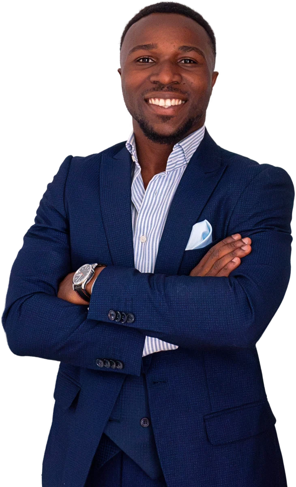
Parti du Lycée de Garçons de Bingerville, j'ai fait mes études d'informatique à Tunis, jusqu'au doctorat. En chemin, j'ai fondé une entreprise, formé des apprenants en Tunisie et en France, et livré des projets pour des clients de plusieurs continents.
Une startup technologique africaine qui met l'innovation numérique au service du développement du continent. Je la dirige depuis 2020, avec une équipe de 10 associés aux profils techniques, créatifs et financiers.
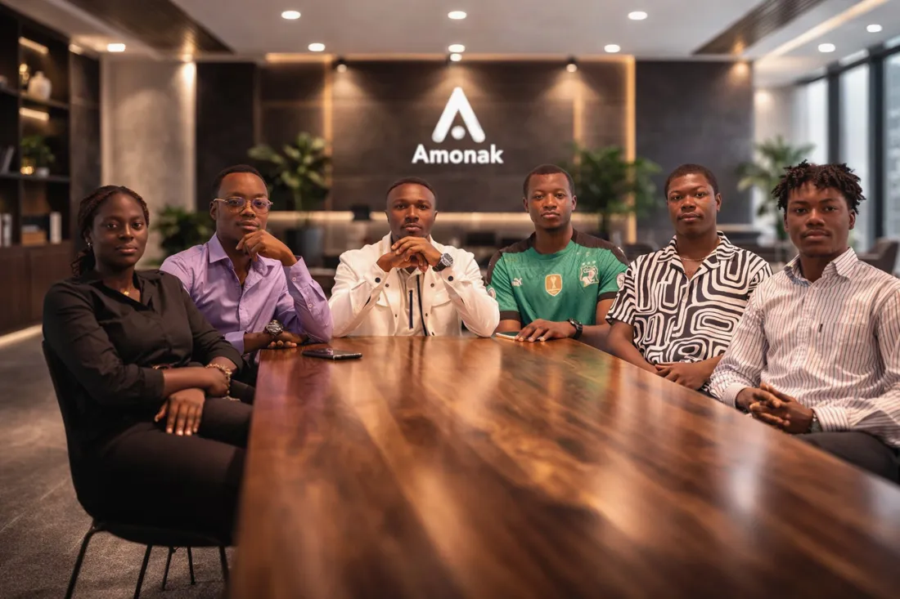
Sites, applications, systèmes de gestion et identités visuelles : chaque projet part d'un besoin réel, pour un client réel.
Logos et chartes créés pour des restaurants, des boutiques, des industries et des ONG.
Campagnes, événements, reportages et supports imprimés.
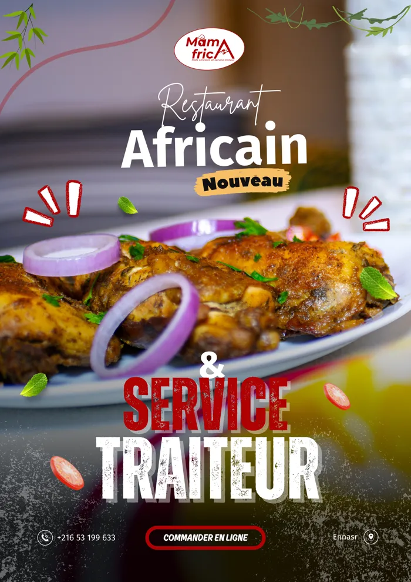
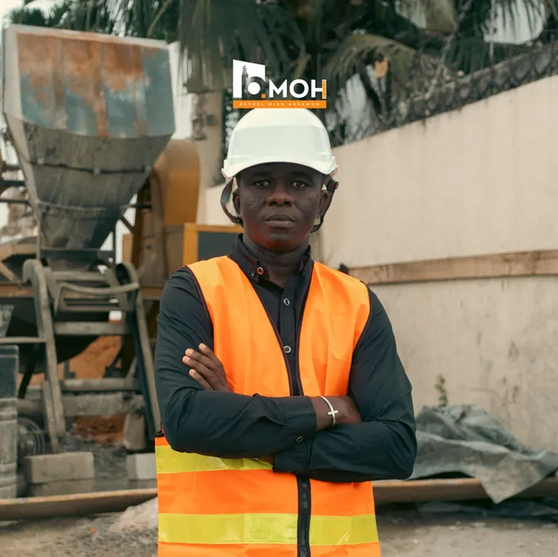
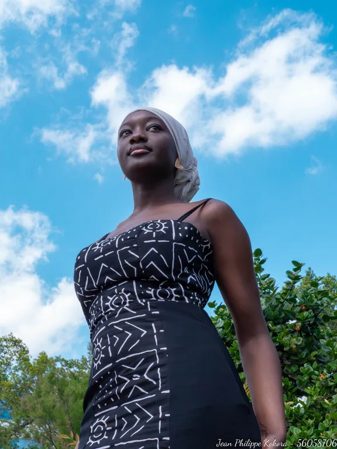
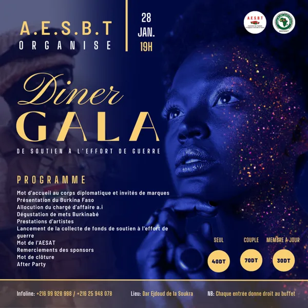
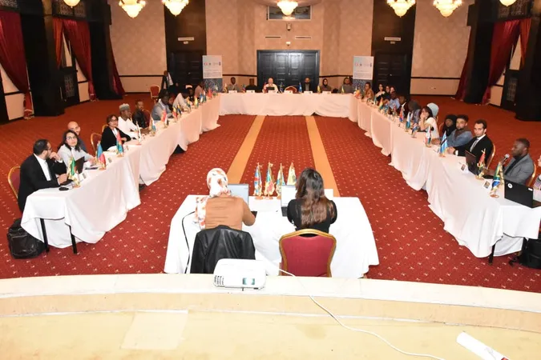
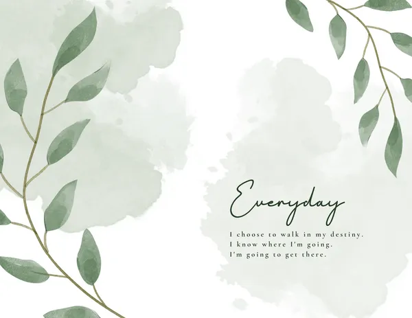
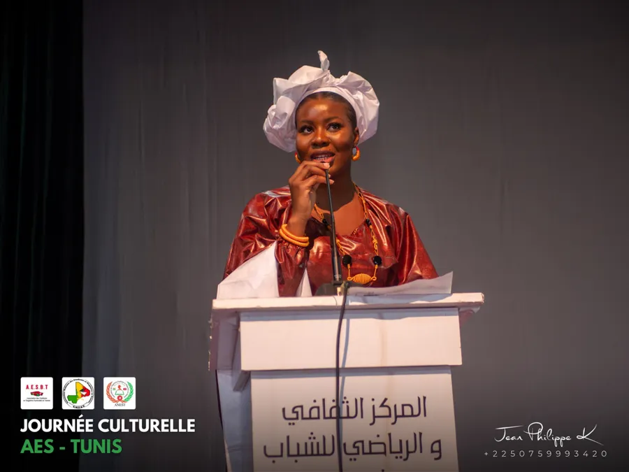
Depuis 2021, j'enseigne le développement, la gestion de projet et le design, en présentiel à Tunis et à distance pour des écoles françaises, surtout auprès d'alternants.
Doctorant à la Faculté des Sciences de Tunis, Université de Tunis El Manar, depuis 2025.
Comment garantir la sécurité, la transparence et la traçabilité des infrastructures critiques et des systèmes financiers, en s'appuyant sur des technologies comme la blockchain et l'intelligence artificielle.
Article de conférence internationale.
Solution sur blockchain privée Hyperledger Fabric combinant SSI et NFT pour la gestion des identités.
Mémoire : SSI et NFT pour la gestion des identités dans les chaînes d'approvisionnement agroalimentaires.
Des compétences techniques solides, un œil de designer et des diplômes obtenus à l'Université de Tunis El Manar.
Des reconnaissances obtenues en chemin, et un engagement constant auprès de la communauté.
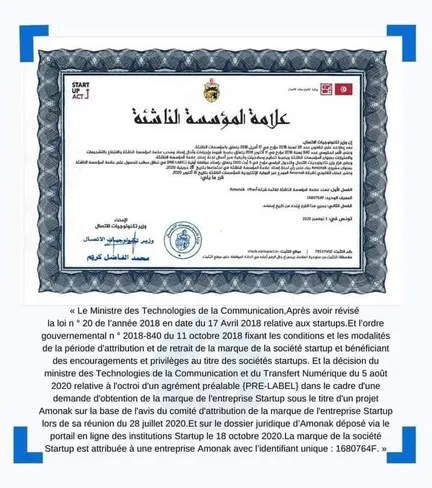
Décerné par l'État tunisien à AMONARC.
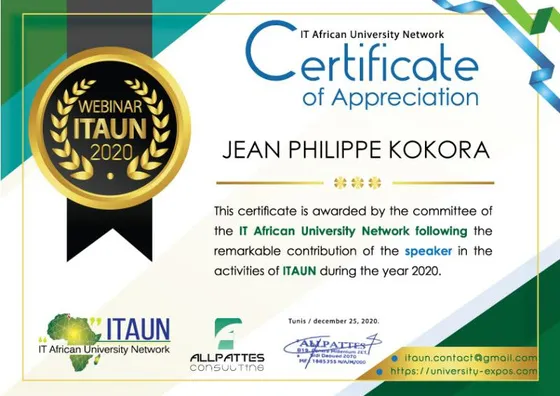
Certificat d'appréciation pour ma contribution.
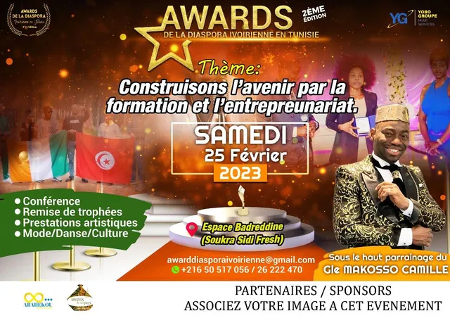
Diaspora ivoirienne en Tunisie.
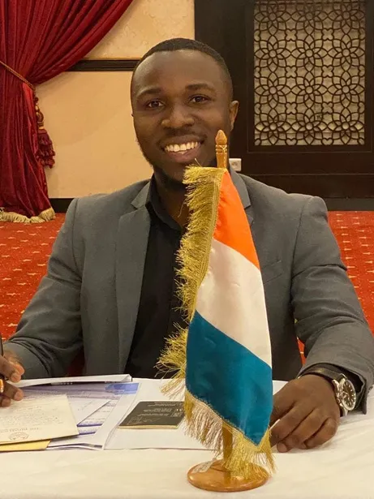
Représentant de la Côte d'Ivoire depuis 2022.
Enseignement, conseil, développement ou projet de recherche : parlons de ce que nous pouvons construire ensemble.